VISIT
TOKYO
TOKYO
도쿄타워
도쿄의 관광 명소, 상징으로 유명.


VISIT
CHIBA 
CHIBA 
노미조 폭포, 가메이와 동굴
환상적인 광경을 볼 수 있다고 SNS에서 화제가 된 명소입니다.
VISIT
TOYAMA
TOYAMA
아이노쿠라 갓쇼즈쿠리 마을
역사적 풍경을 지금도 간직한 이 마을에는 다양한 이야기가 있습니다.

VISIT
TOYAMA
TOYAMA
쇼가와쿄 유람선
흔들리는 유람선 위에서 절경을 탐미하는 시간은 마음을 해방시켜 줍니다.
VISIT
TOHOKU
TOHOKU
긴잔 온천
해가 지면 주변을 비추는 가스등이 향수를 불러일으키는 분위기를 자아냅니다.